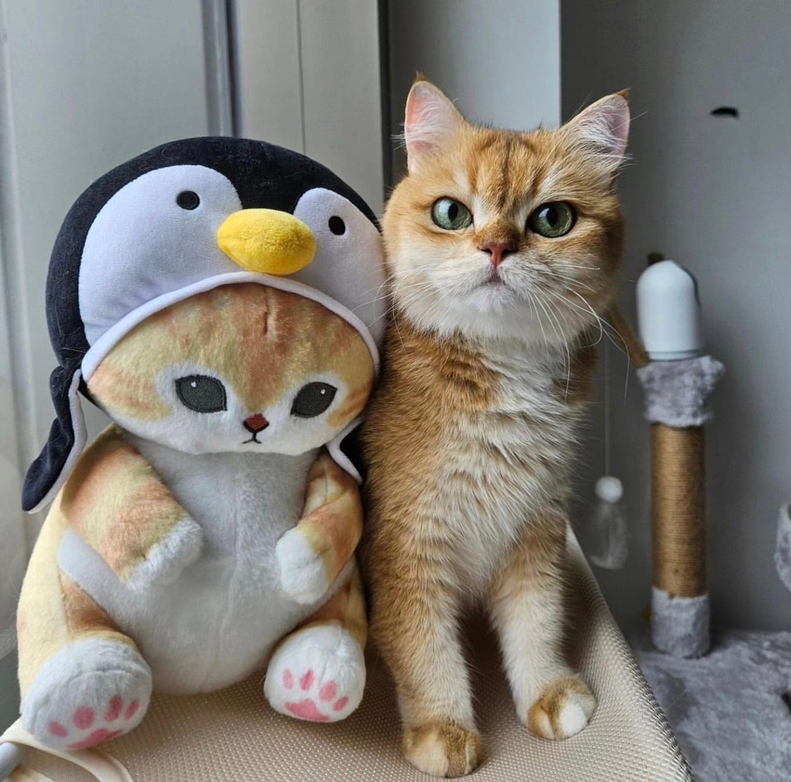

Овечкина Анастасия Игоревна | ||
|---|---|---|
|  |
Дата рождения: 28.04.2002 Адрес проживания: 888888, г. Москва, ул. Московская, д. 1 Телефон: +7 (888) 888-88-88 E-mail: onastja02@gmail.com | |
| ОБРАЗОВАНИЕ | |
|---|---|
| РЭУ им. Г.В. Плеханова, Высшая школа кибертехнологий, математики и статистики 2020-2024 гг. (очно, бюджет) | |
| Направление | Математическое обеспечение и администрирование информационных систем |
| Профиль | Системное и интернет-программирование |
| НАВЫКИ |
|---|
| Основные языки программирования – С++, C# |
| Знание основ PHP, SQL, JavaScript |
| Опыт работы с Windows Forms и Qt |
| Базовый опыт взаимодействия с базами данных (Microsoft SQL Server, PHPMyAdmin) |
| Знание принципов ООП |
| Знание основных паттернов проектирования |
| Знание основных алгоритмов и структур данных |
| Умение работать с Git (GitHub, TortoiseGit) |
| Базовый опыт взаимодействия с Windows PowerShell |
| Уровень владения английским – B1 |